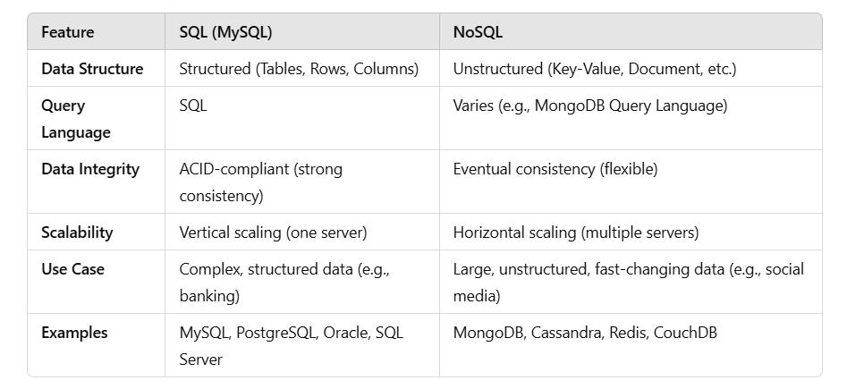
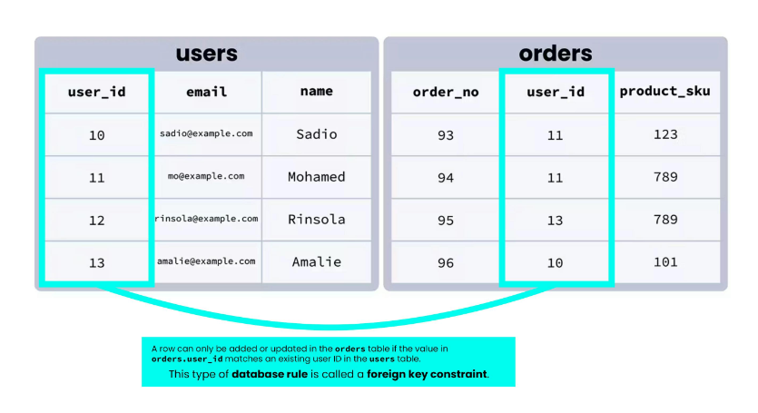
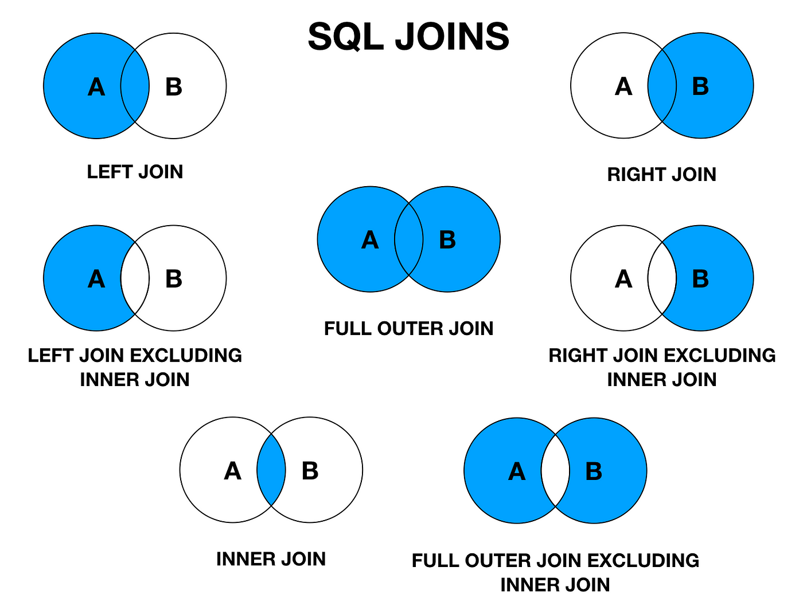
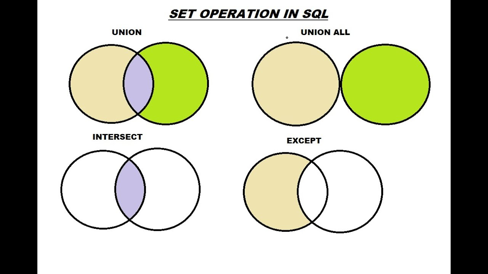
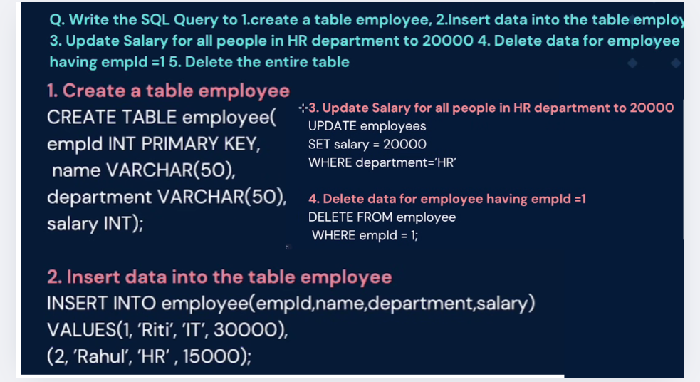
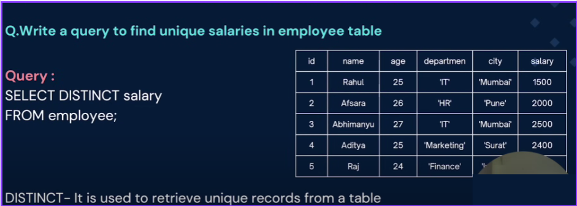
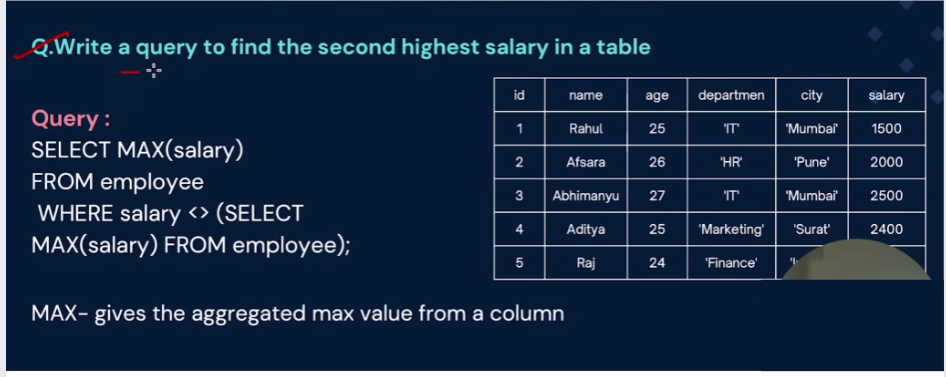
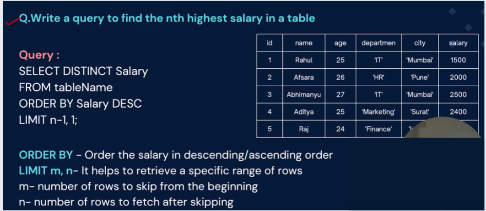
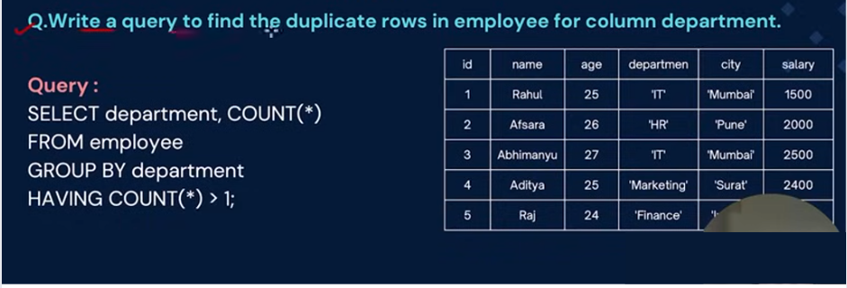

(It is not a database, it is a language used to interact with database)
We use SQL for CRUD Operations :
● CREATE - To create databases, tables, insert tuples in tables etc
● READ - To read data present in the database.
● UPDATE - Modify already inserted data.
● DELETE - Delete database, table or specific data point/tuple/row or multiple rows.
*Note - SQL keywords are NOT case sensitive. Eg: select is the same as SELECT in SQL.
SQL AND MYSQL?
SQL is a standardized language used for managing and querying relational databases.
MYSQLs an open-source RDBMS that uses SQL to manage and manipulate relational data.
Answer:A database is a structured collection of data, organized for easy access, retrieval, and management. It enables efficient storage and secure handling of large volumes of information.
DBMS :-A DBMS is a software that allows users to store, manage, and retrieve data in a database. It organizes data in files without enforcing relationships between data elements. DBMS is suitable for smaller, simpler applications with less complex data needs.
RDBMS :-An RDBMS is a type of DBMS that stores data in a structured format using tables, rows, and columns. It supports relationships between tables through foreign keys, ensuring data integrity and consistency. RDBMS is ideal for large-scale, complex applications that require sophisticated data management and querying.
Answer:
(MySQL):
Structure: SQL databases are relational and use structured data stored in tables (rows and columns). They rely on a predefined schema.
Query Language: SQL (Structured Query Language) is used for defining and managing data in relational databases.
Data Integrity: Supports strong data integrity, with ACID (Atomicity, Consistency, Isolation, Durability) properties ensuring reliable transactions.
Examples: MySQL, PostgreSQL, Oracle, Microsoft SQL Server.
Use Case: Ideal for applications with complex queries, data consistency needs, and relationships between tables (e.g., banking systems, enterprise applications).
NoSQL:
Structure: NoSQL databases are non-relational and can store data in various formats, such as key-value pairs, documents, column-family stores, or graphs.
Query Language: There is no standard query language; each NoSQL database has its own query method (e.g., MongoDB uses BSON queries).
Data Integrity: NoSQL databases typically offer eventual consistency instead of ACID, favoring availability and scalability over strict consistency.
Examples: MongoDB, Cassandra, CouchDB, Redis.
Use Case: Ideal for applications with large amounts of unstructured data, horizontal scalability, and high-speed read/write operations (e.g., social media platforms, big data applications).

Different types of SQL commands or sub-languages used within SQL:
DDL (Data Definition Language): Used to define and manage database structures (tables, schemas).
Example commands: CREATE, ALTER, DROP, TRUNCATE.
DML (Data Manipulation Language): Used to manipulate and manage data within the database.
Example commands: SELECT, INSERT, UPDATE, DELETE.
DCL (Data Control Language): Used to define access controls and permissions for database users.
Example commands: GRANT, REVOKE.
TCL (Transaction Control Language): Used to manage database transactions and ensure data integrity.
Example commands: COMMIT, ROLLBACK, SAVEPOINT.
These sub-languages together provide the full range of capabilities needed for interacting with relational databases in SQL.
● CREATE TABLE:
○ Used to create a new table in the database.
○ Specifies the table name, column names, data types, constraints, and more.
○ Example:
CREATE TABLE employees (id INT PRIMARY KEY,
name VARCHAR(50),
salary DECIMAL(10, 2));
● ALTER TABLE:
○ Used to modify the structure of an existing table.
○ You can add, modify, or drop columns, constraints, and more.
○ Example: ALTER TABLE employees ADD COLUMN email VARCHAR(100);
● DROP TABLE:
○ Used to delete an existing table along with its data and structure.
○ Example: DROP TABLE employees;
● TRUNCATE TABLE:
○ Used to delete the data inside a table, but not the table itself.
○ Syntax – TRUNCATE TABLE table_name
● INSERT:
The INSERT statement adds new records to a table.
Syntax: INSERT INTO table_name (column1, column2, ...) VALUES (value1, value2,
...);
Example: INSERT INTO employees (first_name, last_name, salary) VALUES ('John',
'Doe', 50000);
● UPDATE:
The UPDATE statement modifies existing records in a table.
Syntax: UPDATE table_name SET column1 = value1, column2 = value2, ... WHERE
condition;
Example: UPDATE employees SET salary = 55000 WHERE first_name = 'John';
● DELETE:
The DELETE statement removes records from a table.
Syntax: DELETE FROM table_name WHERE condition;
Example: DELETE FROM employees WHERE last_name = 'Doe';
Data Control Language focuses on the management of access rights, permissions, and
security-related aspects of a database system.
DCL commands are used to control who can access the data, modify the data, or perform
administrative tasks within a database.
DCL is an important aspect of database security, ensuring that data remains protected and
only authorised users have the necessary privileges.
There are two main DCL commands in SQL: GRANT and REVOKE.
1. GRANT:
The GRANT command is used to provide specific privileges or permissions to users or roles.
Privileges can include the ability to perform various actions on tables, views, procedures,
and other database objects.
Syntax:
GRANT privilege_type
ON object_name
TO user_or_role;
In this syntax:
● privilege_type refers to the specific privilege or permission being granted (e.g.,
SELECT, INSERT, UPDATE, DELETE).
● object_name is the name of the database object (e.g., table, view) to which the
privilege is being granted.
● user_or_role is the name of the user or role that is being granted the privilege.
Example: Granting SELECT privilege on a table named "Employees" to a user named
"Analyst":
GRANT SELECT ON Employees TO Analyst;
2. REVOKE:
The REVOKE command is used to remove or revoke specific privileges or permissions that
have been previously granted to users or roles.
Syntax:
REVOKE privilege_type
ON object_name
FROM user_or_role;
In this syntax:
● privilege_type is the privilege or permission being revoked.
● object_name is the name of the database object from which the privilege is being
revoked.
● user_or_role is the name of the user or role from which the privilege is being
revoked.
Example: Revoking the SELECT privilege on the "Employees" table from the "Analyst" user:
REVOKE SELECT ON Employees FROM Analyst;
.DCL and Database Security:
DCL plays a crucial role in ensuring the security and integrity of a database system.
By controlling access and permissions, DCL helps prevent unauthorised users from
tampering with or accessing sensitive data.
Proper use of GRANT and REVOKE commands
ensures that only users who require specific privileges can perform certain actions on
database objects.
Answer:The SELECT statement is used to select data from a database.
Syntax: SELECT column1, column2, ... FROM table_name;
Here, column1, column2, ... are the field names of the table.
If you want to select all the fields available in the table, use the following syntax:
SELECT * FROM table_name;
Ex: SELECT CustomerName, City FROM Customers;
/////////////////////////////////////////////////////////////////////////// EE NN DD ///////////////////////////////////////////////////////////
● WHERE:
The WHERE clause is used to filter records.
Syntax: SELECT column1, column2, ... FROM table_name WHERE condition;
Ex: SELECT * FROM Customers WHERE Country='Mexico';
Operators used in WHERE are:
= : Equal
> : Greater than
< : Less than
>= : Greater than or equal
<= : Less than or equal
<> : Not equal.
Note: In some versions of SQL this operator may be written as !=
/////////////////////////////////////////////////////////////////////////// EE NN DD ///////////////////////////////////////////////////////////
● AND, OR, NOT
TThe WHERE clause can be combined with AND, OR, and NOT operators.
- The AND and OR operators are used to filter records based on more than one
condition:
- The AND operator displays a record if all the conditions separated by AND are TRUE.
- The OR operator displays a record if any of the conditions separated by OR is TRUE.
- The NOT operator displays a record if the condition(s) is NOT TRUE.
Syntax:
SELECT column1, column2, ... FROM table_name WHERE condition1 AND condition2 AND condition3 ...;
SELECT column1, column2, ... FROM table_name WHERE condition1 OR condition2 OR condition3 ...;
SELECT column1, column2, ... FROM table_name WHERE NOT condition;
Example:
SELECT * FROM Customers WHERE Country=’India’ AND City=’Japan’;
SELECT * FROM Customers WHERE Country=’America’ AND (City=’India’ OR City=’Korea’);
/////////////////////////////////////////////////////////////////////////// EE NN DD ///////////////////////////////////////////////////////////
● LIKE:
The LIKE operator is used in a WHERE clause to search for a specified pattern in a column.
There are two wildcards often used in conjunction with the LIKE operator:
- The percent sign (%) represents zero, one, or multiple characters
- The underscore sign (_) represents one, single character
Example: SELECT * FROM employees WHERE first_name LIKE 'J%';
WHERE CustomerName LIKE 'a%'
- Finds any values that start with "a"
WHERE CustomerName LIKE '%a'
- Finds any values that end with "a"
WHERE CustomerName LIKE '%or%'
- Finds any values that have "or" in any position
WHERE CustomerName LIKE '_r%'
- Finds any values that have "r" in the second position
WHERE CustomerName LIKE 'a_%'
- Finds any values that start with "a" and are at least 2 characters in length
WHERE CustomerName LIKE 'a__%'
- Finds any values that start with "a" and are at least 3 characters in length
WHERE ContactName LIKE 'a%o'
- Finds any values that start with "a" and ends with "o"
/////////////////////////////////////////////////////////////////////////// EE NN DD ///////////////////////////////////////////////////////////
● IN:
Filters results based on a list of values in the WHERE clause.
Example: SELECT * FROM products WHERE category_id IN (1, 2, 3);
/////////////////////////////////////////////////////////////////////////// EE NN DD ///////////////////////////////////////////////////////////
● BETWEEN:
Filters results within a specified range in the WHERE clause.
Example: SELECT * FROM orders WHERE order_date BETWEEN '2023-01-01' AND
'2023-06-30';
/////////////////////////////////////////////////////////////////////////// EE NN DD ///////////////////////////////////////////////////////////
● IS NULL:
Checks for NULL values in the WHERE clause.
Example: SELECT * FROM customers WHERE email IS NULL;
/////////////////////////////////////////////////////////////////////////// EE NN DD ///////////////////////////////////////////////////////////
● AS:
Renames columns or expressions in query results.
Example: SELECT first_name AS "First Name", last_name AS "Last Name" FROM
employees;
/////////////////////////////////////////////////////////////////////////// EE NN DD ///////////////////////////////////////////////////////////
● AS:
● DISTINCT:
Removes duplicate rows from query results.
Syntax: SELECT DISTINCT column1, column2 FROM table_name;
● ORDER BY
The ORDER BY clause allows you to sort the result set of a query based on one or more columns.
Basic Syntax:
- The ORDER BY clause is used after the SELECT statement to sort query results.
- Syntax: SELECT column1, column2 FROM table_name ORDER BY column1
[ASC|DESC];
Ascending and Descending Order:
- By default, the ORDER BY clause sorts in ascending order (smallest to largest).
- You can explicitly specify descending order using the DESC keyword.
- Example: SELECT product_name, price FROM products ORDER BY price DESC;
● GROUP BY
The GROUP BY clause in SQL is used to group rows from a table based on one or more columns.
Syntax:
- The GROUP BY clause follows the SELECT statement and is used to group rows based on specified columns.
- Syntax: SELECT column1, aggregate_function(column2) FROM table_name
>GROUP BY column1;
Aggregation Functions:
○ Aggregation functions (e.g., COUNT, SUM, AVG, MAX, MIN) are often used
with GROUP BY to calculate values for each group.
○ Example: SELECT department, AVG(salary) FROM employees GROUP BY department;
- Grouping by Multiple Columns:
○ You can group by multiple columns by listing them in the GROUP BY clause.
○ This creates a hierarchical grouping based on the specified columns.
○ Example: SELECT department, gender, AVG(salary) FROM employees
GROUP BY department, gender;
● HAVING Clause:
○ The HAVING clause is used with GROUP BY to filter groups based on
aggregate function results.
○ It's similar to the WHERE clause but operates on grouped data.
○ Example: SELECT department, AVG(salary) FROM employees GROUP BY department HAVING AVG(salary) > 50000;
Combining GROUP BY and ORDER BY:
○ You can use both GROUP BY and ORDER BY in the same query to control the order of grouped results.
○ Example: SELECT department, COUNT(*) FROM employees GROUP BY department ORDER BY COUNT(*) DESC;
1. Primary Key
A primary key is a unique identifier for each record in a table.
It ensures that no duplicate or NULL values are allowed in the column(s) defined as the primary key.
Primary keys are often used to enforce data integrity within a single table.
Example:
Let's say we have a Customers table, where each customer has a unique CustomerID.
CREATE TABLE Customers (
CustomerID INT PRIMARY KEY,
Name VARCHAR(100),
Email VARCHAR(100)
);
Here, CustomerID is the primary key, ensuring each customer record is unique.
2. Foreign Key
A foreign key is a field (or collection of fields) in one table that uniquely identifies a row in another table.
The foreign key establishes a relationship between two tables, enforcing referential integrity.
It ensures that values in the foreign key column(s) must exist in the referenced primary key column(s) in another table.
Example:-

Here's a SQL example based on the image you've shared. We have two tables: users and orders. In this setup:
The users table has a primary key column user_id, ensuring each user is unique.
The orders table has a user_id column that acts as a foreign key, referencing the user_id in the users table to ensure that each order is associated with a valid user.
CREATE TABLE orders (
order_no INT PRIMARY KEY,
user_id INT,
product_sku INT,
FOREIGN KEY (user_id) REFERENCES users(user_id)
);
● AGGREGATE FUNCTIONS
These are used to perform calculations on groups of rows or entire result sets. They provide insights into data by summarising and processing information.
Common Aggregate Functions:
- COUNT():
Counts the number of rows in a group or result set.
Calculates the sum of numeric values in a group or result set.
- AVG():
Computes the average of numeric values in a group or result set.
- MAX():
Finds the maximum value in a group or result set.
- MIN():
Retrieves the minimum value in a group or result set.
Here’s a rundown of the primary types of joins in SQL:
INNER JOIN: Returns only the rows with matching values in both tables.
SELECT table1.column1, table2.column2
FROM table1
INNER JOIN table2 ON table1.common_column = table2.common_column;
LEFT JOIN (or LEFT OUTER JOIN): Returns all rows from the left table, and the matching rows from the right table. If there’s no match, NULL values fill in for the right table’s columns.
SELECT table1.column1, table2.column2
FROM table1
LEFT JOIN table2 ON table1.common_column = table2.common_column;
RIGHT JOIN (or RIGHT OUTER JOIN): Returns all rows from the right table, and the matching rows from the left table. If there’s no match, NULL values fill in for the left table’s columns.
SELECT table1.column1, table2.column2
FROM table1
RIGHT JOIN table2 ON table1.common_column = table2.common_column;
FULL OUTER JOIN: Returns all rows when there is a match in either left or right table. If there is no match, NULL values will appear for columns from the table without a match.
SELECT table1.column1, table2.column2
FROM table1
FULL OUTER JOIN table2 ON table1.common_column = table2.common_column;
CROSS JOIN: Returns the Cartesian product of the two tables (all possible combinations of rows from the two tables).
SELECT table1.column1, table2.column2
FROM table1
CROSS JOIN table2;
SELF JOIN: Joins a table with itself, useful when a row needs to be compared with other rows in the same table.
SELECT A.column1, B.column2
FROM table A, table B
WHERE A.common_column = B.common_column;

1. UNION
Combines the result sets of two queries and removes duplicate rows.
Columns in both queries must have the same number and compatible data types.
SELECT column1, column2 FROM table1
UNION
SELECT column1, column2 FROM table2;
2. INTERSECT
Returns only the rows that are common between the result sets of two queries.
Like UNION, the queries must return the same number and type of columns.
SELECT column1, column2 FROM table1
INTERSECT
SELECT column1, column2 FROM table2;
3. EXCEPT (or MINUS in some databases)
Returns rows from the first query that do not appear in the second query's result set.
Used when you want records unique to the first query.
SELECT column1, column2 FROM table1
EXCEPT
SELECT column1, column2 FROM table2;
4. UNION ALL
Combines the result sets of two queries without removing duplicates, meaning it will include all rows, even if they are duplicated.
SELECT column1, column2 FROM table1
UNION ALL
SELECT column1, column2 FROM table2;






DEED LOVK MISSINgKEEP GOING!! JUST ONE LAST STEP..